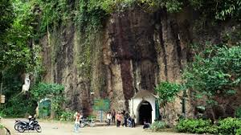

Sejarah
Gua Belanda terletak di Bandung dan merupakan salah satu dari banyak bangunan dan peninggalan bersejarah yang dibangun Belanda pada saat menguasai Indonesia. Pada awalnya gua yang di bangun pada tahun 1901 ini dipergunakan untuk perusahaan yang bergerak dibidang pembangkit listrik tenaga air. Namun, pada tahun 1918 Belanda melakukan renovasi dengan menambah lorong dan koridor dalam gua yang berada di daerah Dago Pakar ini. Pembangunan yang dilakukan oleh Belanda mencakup 15 lorong dan 3 koridor. Pada setiap koridor mempunyai fungsi yang berbeda-beda. Koridor pertama untuk saluran air, koridor kedua untuk lubang ventilasi dan yang ketiga untuk ruang interogasi. Suasana di dalam gua yang dingin dan lembab ditambah sisa-sisa reruntuhan dalam gua Belanda, akan anda rasakan ketika memasuki gua yang mempunyai luas 750 m dan dibuat dari batu stupa, yaitu batu yang keluar dari gunung Krakatau. Gua Belanda seakan menceritakan bagaimana para penjajah melakukan aktivitas pada saat mereka menguasai Indonesia. Pada tahun 1941 Belanda merubah fungsi Gua yang pada awalnya berfungsi untuk saluran air dan dirubah menjadi pusat komunikasi. Ini dilakukan pihak Belanda untuk mencegah perlawanan yang dilakukan para pejuang tanah air Indonesia. Setelah jaman kemerdekaan berada di pihak Indonesia, pada 14 Januari 1985, Gua Belanda dijadikan tempat wisata dan menjadi tujuan wisatawan lokal dan asing. Kawasan sekitar Gua yang berupa hutan yang terawat dan sangat indah lalu diresmikan dengan diberi nama Taman Hutan Raya Ir. H. Juanda.misteri gua belanda
Goa Belanda dan Goa Jepang yang terletak di Taman Hutan Raya Ir.H. Djuanda, Bandung, tentu menyimpan sejarah dan misteri yang masih belum terungkap hingga saat ini. Masyarakat awam hanya mengetahui bahwa tempat tersebut menjadi saksi bisu di mana para masyarakat pribumi diperbudak dan disiksa secara tidak manusiawi. Terdapat sekiranya dua goa yang jaraknya tidak terlalu jauh di area taman tersebut. Setiap goa pun memiliki sejarah masa lalu dan ceritanya masing-masing serta misteri yang belum terungkap hingga kini. Pada awal berdirinya, goa ini digunakan Belanda untuk menyadap air dari Sungai Cikapundung yang digunakan oleh PLTA. Namun, pada masa perang dunia ke-2, Belanda memanfaatkan terowongan ini sebagai stasiun radio telekomunikasi. Sementara pada masa kemerdekaan, goa ini beralih fungsi sebagai gudang mesiu. Di sisi lain Goa Jepang dibangun pada 1942 yang difungsikan menjadi barak militer dan perlindungan yang memiliki 18 bungker. Menurut penelusuran yang pernah dilakukan oleh Praktisi Supranatural, Ana Cikey belum lama ini. Sebenarnya sosok hantu yang mendiami gua ini saling berkaitan satu sama lainnya. Hal tersebut terungkap pada saat medium yang dilakukannya bersama tim iNewsTV dalam sebuah program televisi.Alif Muhammad Karim Ramadhan - ESQ Business School.©
 Visit Us on Instagram
Visit Us on Instagram